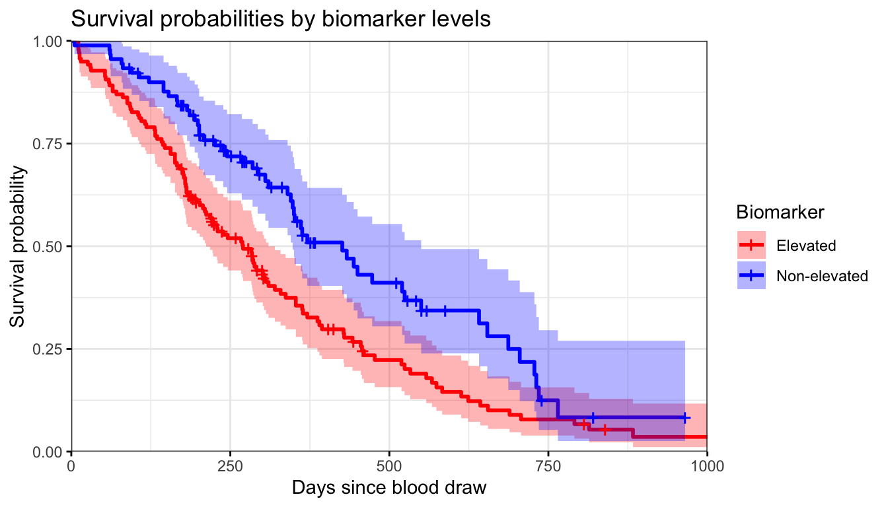
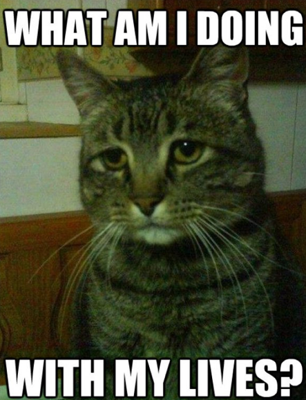
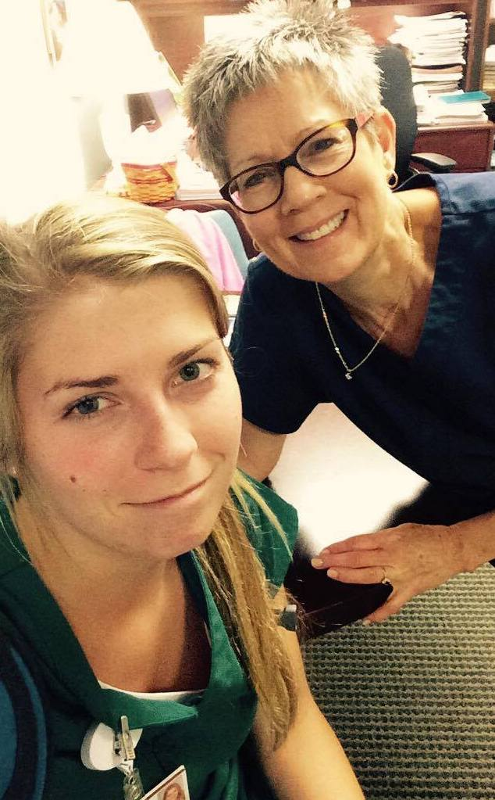
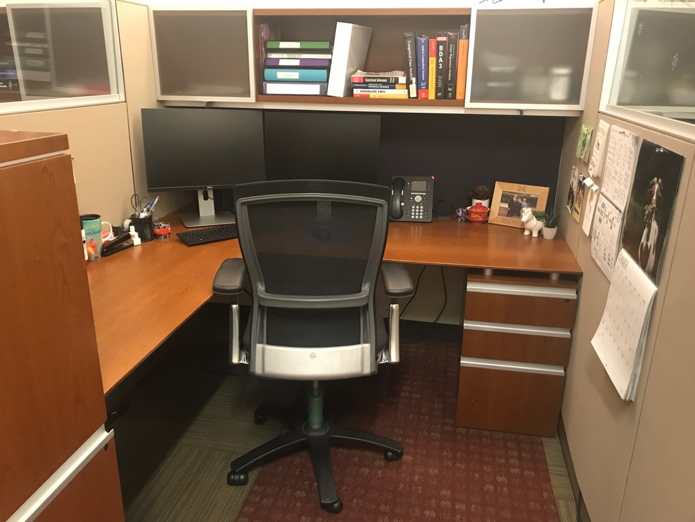
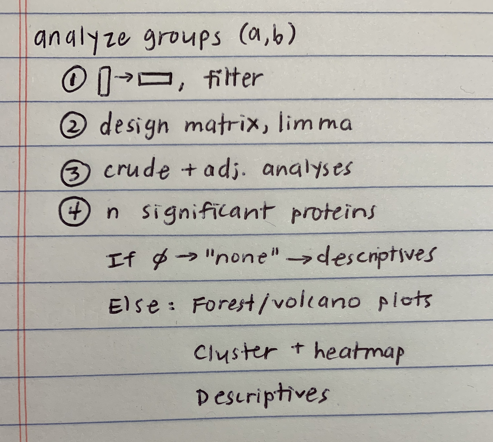
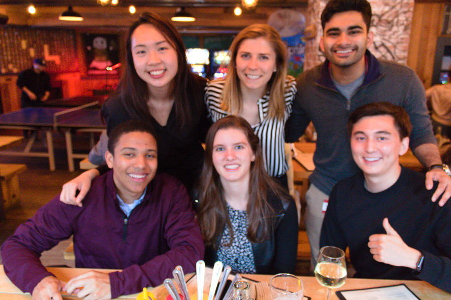

It seems fitting that my first blog post is on a topic that I tried and failed to find via Google search a few years ago.
I’ll back up for a second. A few years ago I was a recent college graduate, and trying hard to “figure out my life.” My major was biochemistry, which is one of those degrees where 99%* of people just keep on going to school.

I was working full-time night-shift at a hospital as a nurse technician. The key word in that sentence is “night-shift” which meant that even on my days off, I didn’t sleep at night, but all my friends and family did. So, I was often alone and awake, with a lot of time to think about my future… and surf the web for potential careers.
I knew I wanted a job in healthcare, but I was confused as to where in medicine would be a good fit for me. I could visualize very clearly what my days at work would look like if I were to become a physician, or a physician assistant, or a registered nurse (all careers I developed lengthy pros and cons lists for).
However, there was another career involving medicine that I was drawn to but didn’t know enough about. “Biostatistics” was a class biochemistry majors took at my university, but I had been exempted because I took AP Statistics in high school.
To me, biostatistics seemed to be the application of some high school-level math to biological problems. I had no concept of what a degree in biostatistics, and much less a career as a biostatistician, could entail. Endless Google searches with some variant of “what does a biostatistician do” and even “day in the life of a biostatistician” had not given me a very good picture of what I would actually be doing as a biostatistician.
I ultimately lucked out during a conversation with a professor during my senior year of college. I was rambling about my many life plans and he mentioned his cousin was the chair of a well-known Biostatistics program. He encouraged me to email her my questions about biostatistics, and I am so grateful she took time to respond with detailed answers. Her description of life as a biostatistician was enough for me to choose going to graduate school for an MS in biostatistics over medical school/physician assistant school/second-degree nursing.
I feel wholeheartedly that although I would have enjoyed my life as an MD/PA/RN, biostatistics is the right career for me. So, in honor of my confused younger self, and as a way of paying it forward, I’ve dedicated this topic for my very first blog post!

Hanging out with my mom (an RN of 41 years and counting!) after a particularly exhausting night shift as a nurse technician.
A disclaimer: what follows is a day in the life of one masters-level, academic research-focused biostatistician and I cannot make claims about the careers of statisticians in industry or pharmaceuticals or hospitals or government. In addition, here’s a bit more background before I get into the granular details of my work:
My official job description is to assist investigators (i.e. physicians or PhD-level researchers with a scientific question) throughout all stages of the scientific research process. This means helping with study design, data collection, data cleaning (also known as getting the data in the right form for analysis and making sure nothing is obviously incorrect), data visualization, statistical analysis, reporting and explaining my results, and writing methods and results sections for scientific papers. You will soon see that on any given day I am working on multiple projects at various stages of this process.
I will mention R/Rstudio a bit. For those who are not familiar with it, R is an open-source (which means anyone can help contribute) programming language that is well-equipped for statistical analysis. It’s arguably very similar to Python, which is a more widely used language, but statisticians tend to use R more because its statistical packages are very well-developed. During grad school I used Python because I worked in a computational biology lab, and I learned SAS (another statistical programming language) in some of my classes, but R is what I prefer these days. Rstudio is a platform that makes it more user friendly to use R.
So, without further ado! An average day**:

9:30AM - I arrive at my office and spend a few minutes chatting with my coworkers. To set the scene for you, I have a fairly spacious cubicle within a group of five other cubicles. I sit next to another research biostatistician, two health informatics professionals, and two clinical trial grant specialists. I’m actually not completely sure what that last pair’s title is, but I know their primary task is to make sure several multi-million dollar clinical trial grants stay funded (woah). Everyone I sit by is young and goofy, but very driven, making for a fun office environment.
9:45AM - I check and answer new emails from researchers I collaborate on projects with. I send my availability for a meeting to a group of doctors who want to go over the results of a recent analysis I did on Body Mass Index and death rates in the Intensive Care Unit. In a different thread of emails, I thank several researchers from another university for clarifying their methods and sending me code for an analysis similar to one I will soon work on.
10:00AM - I open a manuscript draft for a paper I received yesterday. It’s from a group of residents and medical students I worked with a few months ago. Their study looks at the association between blood levels of a certain biomarker and the time to death in cancer patients. My role in the analysis was to examine the associations between several biomarkers such as phosphorus, phosphate, and calcitriol. I then fit a regression model, just like y=mx+b, but with way more math. For this analysis I used a model for when your y is a time to an event (death, in this case), fittingly called a survival model. After adjusting for confounding factors like age, which affects both tumor progression and biomarker levels, there was a significant association between the biomarker and time to death in cancer patients.
An example of a figure for a manuscript. This particular plot suggests that cancer patients with an elevated biomarker died at a faster rate than patients who did not have an elevated biomarker.
The researchers have asked for my assistance in writing the methods section. The methods section of a scientific article is the steps the scientists took to analyze data explicitly written out for anyone looking to review or learn about their work. I read through their current draft of the paper carefully, make some edits, and send it back. They are hoping to submit this paper to a peer-reviewed journal within a few weeks.
10:45AM - I have a weekly meeting a few blocks from my office with a neurologist I spend a large portion of my time working with. She is a leader in the field of Alzheimer’s research, and I find it very rewarding to work on her data and be a small part of a growing body of research in the field. I am “contracted” out to her research as I am to all of the researchers I work with—it’s how my institution budgets funding for grants. One of the faculty-level biostatisticians in my department—which means he has a PhD and specializes in certain statistical methods—is also part of this contract, and some days, like today, he joins me at these meetings.
11:00AM - This week’s meeting is pretty straightforward. We discuss how we can improve one of the neurologist’s National Institute of Health grants from a statistics standpoint. The statistical methods for this project can get complicated, in part because we are looking at the brain scans of women in different stages of menopause over time, and we have to consider age as a confounding factor. We want to convey to the reviewers of our grant how we plan to do this. Since this is a methods-focused meeting, I mostly listen and take notes along with two neurology research coordinators that also attend these weekly meetings. When the meeting concludes I have for less work than usual - I only need to make a few graphs representing our study design and past results for inclusion to the grant.

12:00PM - I head to lunch with a group of coworkers. They have gotten food from a nearby salad place, and we sit in one of our favorite buildings on campus and eat together. Our jokes oscillate from incredibly nerdy to pretty stupid. One of my coworkers points out that our hair is styled the same way for the third day in a row.
12:45PM - I get back to my desk and type up my handwritten notes from the neurology meeting and put them in that project’s “Notes” folder. It’s important to me that I keep track of all my meetings electronically - I fear losing my notebooks or someone else having to decipher my cursive should I ever have to pass off a project.

1:00PM - I start to make a plan for a different analysis I’m working on. This project is something new for me - it involves a protein assay and data for 1000+ different protein expression levels. The researcher I’m working with wants to know which proteins are over- and under-expressed in people with a specific autoimmune disorder and a certain type of lung disease. I’ve recently spoken to some bioinformaticians and have a clearer idea of the analysis I need to do. I draw out a little map of the code organization I think would be the most efficient for this analysis and open up Rstudio.
1:30PM - I get to work writing up functions, which is just a fancy programming way of saying your code can do the same thing to multiple data sets (or subsets of patients, as is the case of this protein expression study I’m doing). Sometimes it takes a bit longer to write my functions than it would if I were to just copy and paste my code several different times, but the final code is much more readable and less prone to errors. By the time I’m done working, I have some interactive plots showing the significant and non-significant results. When you hover over them, they show what protein corresponds to which point on the graph. They look like this, except this is not the real data we used in her study.

I use Rstudio and its amazing Rmarkdown tool to craft a draft report to the researcher, and I save it with today’s date in my “Reports” folder for that project. The report so far includes unadjusted and adjusted models of all the protein expressions using very small p-values to account for the 1000+ statistical comparisons we’re making. I show the results in various plots such as the one above (called a “volcano plot” for its shape).
I have also started writing code for models to determine which proteins are most different, or uniquely expressed, between subgroups of patients. Tomorrow, I will use a technique common in machine learning, called clustering, to see if these protein expressions can correctly classify subgroups of patients. The goal is to find a minimum group of proteins to identify patients of interest who have both the autoimmune disorder and the lung disease my collaborator is interested in. One way this research could be impactful is that it may help determine which proteins pharmaceuticals should develop drugs to target.
I close the report; I will continue working on this analysis tomorrow.
4:45PM - It’s time for my last meeting of the day. I head to another floor of my office building and get my laptop set up in a conference room. I await the arrival of several doctors. It will be my first time meeting most of them, and our task today is to discuss the data collection process for a future study involving both genetic mutation data from tumor biopsies and clinical data from electronic health records on thousands of patients with lung cancer.
5:00PM - The doctors arrive and, after introductions, we talk about the current stage of the project and what the goals are. We discuss the timing of starting chart reviews of patients, how we will upload the information to a database efficiently, and what might be the best way to condense the highly detailed genetics data into useful information for an analysis. Our solution will likely involve a series of iterative searches through the columns containing genetic information.

The start of a database I am helping researchers build to collect data for their study. This is not my favorite part of my job, but it is a crucial step for good scientific research.
6:00PM - The meeting ends, and I go back to my desk to record more handwritten notes. I log the hours I spent on each project that day into Toggl, which is the time-tracking application our team uses. This is so we know how much time we’re spending on each project, and is as much for our own sake as it is anyone else’s. I update my to-do list, which is a giant color-coded excel spreadsheet, and eat a few chocolate covered raisins as my reward for a productive day.
6:30PM - I leave work! I typically have some kind of activity, like happy hour (see my cute cubicle buddies below), a sports game, or Spanish class that I’m heading off to. Some days I attend coding workshops hosted by groups such as R-ladies. On nights when I’m feeling especially nerdy, I’ll go home and read a statistics paper or sift through the #rstats tips on twitter.

…So, there you have it. One average daily experience as an early career masters-level statistician. All in all, I have an excellent work-life balance and overall work environment. Every day I get to learn more about science, medicine, statistics, and the intersection of these wonderful ideas. Although it varies quite a bit, approximately 10% of each day involves writing, 20% interacting with other researchers, and the rest of it is spent thinking critically and finding answers to problems I am passionate about.
I hope if there are any 22, 42, or 14 year-olds out there considering a career in biostatistics and struggling to figure out what on earth we actually do, that you find this post and it lessens your confusion!
All the best,
Kat
If you found this post useful, you might be interested in a follow up post I wrote answering common email questions I’ve received. I also interviewed my friend from grad school who is a Biostatistician for a pharmaceutical CRO in a separate blog post.
*Not a real statistic.
**Exact details and diseases of the studies I am currently working on have been generalized or altered to protect the research interests of my collaborators.